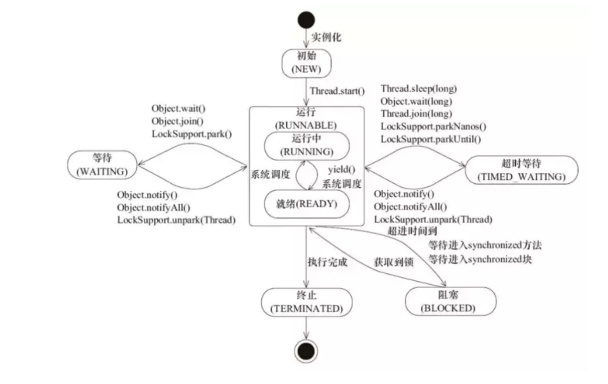

java多线程编程
进程与线程
进程是资源分配的最小单位,线程是程序执行的最小单位。
进程:进程是程序执行的一个实例，系统进行资源分配和调度的一个独立单位，是担当资源分配的最小单位；
线程:线程是进程的一个执行流,是CPU调度和分派的基本单位。一个线程就是一个独立的栈结构，每个进程至少有一个线程。

1) New新建状态：
当程序使用 new 关键字创建了一个线程后，该线程就处于新建状态，此时线程还未启动（此时还是一个普通的对象）；
2) Runnable就绪状态：
一个新创建的线程并不自动开始运行，要执行线程，必须调用线程的 start() 方法（这时才是一个真正的线程而不是普通对象）；
当线程对象调用 start() 方法即启动了线程，start() 方法创建线程运行的系统资源，并调度线程运行 run() 方法；当 start() 方法返回后，线程就处于就绪状态；处于就绪状态的线程并不一定立即运行 run() 方法，线程还必须同其它线程竞争 CPU 时间，只有获得 CPU 时间才可以运行线程；
因为在单 CPU 的计算机系统中，不可能同时运行多个线程，一个时刻仅有一个线程处于运行状态；因此此时可能有多个线程处于就绪状态；对多个处于就绪状态的线程是由 Java 运行时系统的线程调度程序来调度的；
3) Running运行状态：
当线程获得 CPU 时间后，它才进入运行状态，真正开始执行 run() 方法（此时线程获得 CPU 时间片，真正开始运行）；
4) Block阻塞状态：
线程运行过程中，可能由于各种原因进入阻塞（等待）状态：
线程通过调用 sleep() 方法进入睡眠状态；
线程通过调用 suspend() 方法而被挂起；
线程调用一个在 I/O 上被阻塞的操作；
线程试图得到一个锁，而该锁正被其它线程持有；
线程在等待某个触发条件（条件变量）；
所谓阻塞状态是正在运行的线程没有运行结束，暂时让出 CPU，这时其它处于就绪状态的线程就可以获得 CPU 时间，进入运行状态；
5) Dead死亡状态：
有两个原因会导致线程死亡：
run() 方法正常退出而自然死亡；
一个未捕获的异常终止了 run() 方法而使线程猝死；
为了确定线程在当前是否存活着（就是要么是可运行的，要么是被阻塞了），需要使用 isAlive() 方法，如果还存活则返回 true；
如果试图对一个已经死亡的线程调用 start() 方法，那么在程序运行期间将会抛出 IllegalThreadStateException 运行时异常。
睡眠、挂起、阻塞
睡眠，即调用线程的 sleep() 方法，主动行为，不过因为睡眠有一个时长，时间到了就会自动苏醒；
挂起，可以是主动（调用线程的 suspend() 方法）也可以是被动（被线程调度程序挂起），手动挂起需要手动恢复（调用线程的 resume() 方法）；
阻塞，被动，是线程在等待某种事件或者资源（如等待对象锁、等待条件变量、等待 I/O 操作完成）的表现，一旦获得所需资源或者事件信息就自动回到就绪态。
睡眠和挂起是两种行为，阻塞则是一种状态；睡眠和挂起的结果就是变成阻塞状态。
线程交互
线程的交互可以理解为线程之间的通信，通过 Object 类的 wait()、notify()、notifyAll() 方法进行线程通信；
竞态条件 & 临界区
当两个线程竞争同一资源时，如果对资源的访问顺序敏感，就称存在竞态条件；导致竞态条件发生的代码区称作临界区；
线程死锁
所谓死锁，是指多个线程在运行过程中因争夺资源而造成的一种僵局(DeadlyEmbreace)，即互相等待的现象，当线程处于这种僵持状态时，若无外力作用，它们都将无法向前推进；
典型的例子：线程 A 获得了锁 1，线程 B 获得了锁 2；这时线程 A 调用 lock 试图获得锁 2，结果是需要挂起等待线程 B 释放锁 2，而这时线程 B 也调用 lock 试图获得锁 1，结果是需要挂起等待线程 A 释放锁 1，于是线程 A 和 B 都永远处于挂起状态了；
产生死锁的必要条件
虽然线程在运行过程中可能发生死锁，但死锁的发生也必须具备一定的条件：
1) 互斥条件：指线程对所分配的资源进行排它性使用，即在一段时间内某资源只由一个线程占用；如果此时还有其它线程请求该资源，则请求者只能等待，直至占有该资源的线程释放；
2) 请求和保持条件：指线程已经保持了至少一个资源，但又提出了新的资源请求，而该资源又被其它线程占有，或者已经拥有了该资源却又再次请求，此时请求线程阻塞，但又对自己已获得的资源保持不放；
3) 不剥夺条件：指线程在已获得的资源，在未使用完之前，不能被剥夺，只能在使用完时由自己释放；
4) 环路等待条件：指在发生死锁时，必然存在一个 线程–资源 的环形链，即线程集合{P0, P1, P2, ... Pn}中的 P0 正在等待 P1 占用的资源；P1 正在等待 P2 占用的资源，……，Pn 正在等待已被 P0 占用的资源；
处理死锁的基本方法
为保证系统中诸线程的正常运行，应事先采取必要的措施，来预防发生死锁；在系统中已经出现死锁后，则应及时检测到死锁的发生，并应采取适当的措施来解除死锁；目前，处理死锁的方法可归结为以下四种：
1) 预防死锁：这是一种较简单和直观的方法；该方法是通过设置某些限制条件，去破坏产生死锁的四个必要条件中的一个或几个，来预防发生死锁；但由于所施加的限制条件往往太严格，因而会导致系统资源利用率和系统吞吐量低；
2) 避免死锁：该方法同样是属于事先预防的策略，但它并不须事先采取各种限制措施去破坏产生死锁的四个必要条件，而是在资源的动态分配过程中，用某种方法去防止系统进入不安全状态，从而避免发生死锁；这种方法只需事先施加较弱的限制条件，便可获得较高的资源利用率及系统吞吐量，但在事实上有一定的难度；目前在较完善的系统中常用此方法来避免发生死锁；
3) 检测死锁：这种方法并不须事先采取任何限制性措施，也不必检查系统是否已经进入不安全区，而是允许系统在运行过程中发生死锁；但可通过系统所设置的检测机构，及时的检测出死锁的发生，并精确地确定与死锁有关的线程和资源；然后采取适当措施，从系统中将已发生的死锁清除掉；
4) 解除死锁：这是与检测死锁相配套的一种措施；当检测到系统中已发生死锁时，须将线程从死锁状态中解脱出来；常用的实施方法是撤销或挂起一些线程，以便回收一些资源，再将这些资源分配给已处于阻塞状态的线程，是之转为就绪状态，以继续运行；死锁的检测和解除措施有可能使系统获得较好的资源利用率和吞吐量，但在实现上难度也最大；
ThreadLocal
ThreadLocal 是一个泛型类，位于 java.lang 包。ThreadLocal，看名字就知道，”线程本地变量”、”线程局部变量”。
ThreadLocal 的作用是提供线程内的局部变量，这种变量在线程的生命周期内起作用，减少同一个线程内多个函数或者组件之间一些公共变量的传递的复杂度。
synchronized：以时间换空间，只提供一份变量，让不同的线程排队访问；
ThreadLocal：以空间换时间，为每个线程都创建一个变量副本，因此可以同时访问而互不影响。
synchronized 用于线程间的数据共享，而 ThreadLocal 则用于线程间的数据隔离。
ThreadLocal 实现原理
- 每个 Thread 对象中都有一个
ThreadLocal.ThreadLocalMap threadLocals = null成员，ThreadLocalMap 就是一个普通的 Map，Key 为 ThreadLocal 类，Value 则为 Object 类；因此每个线程可以同时维护多个 ThreadLocal - Object 键值对。 - ThreadLocalMap 的 Key 是弱引用对象（如果一个对象只存在弱引用，那么它随时都会被 GC）；而 Value 则是强引用的；为了避免内存泄漏，在
get()、set()、remove()方法内部会自动清理所有 Key 为 null 的 Value；当然还是建议使用 remove() 来显式的释放。
ThreadLocal 使用建议
- ThreadLocal 应定义为静态成员变量；
- 能通过传值传递的参数，不要通过 ThreadLocal 存储，以免造成 ThreadLocal 的滥用；
- 在使用线程池的情况下，当业务周期处理完成时，最好显式的调用 remove() 方法，清空旧值。